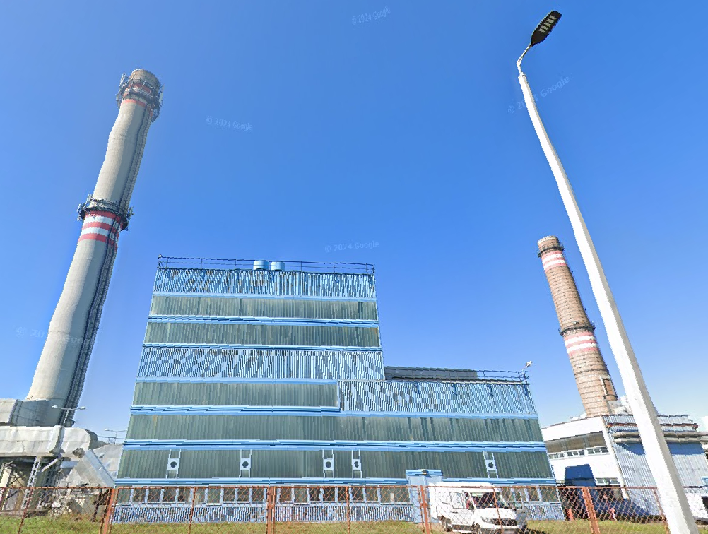
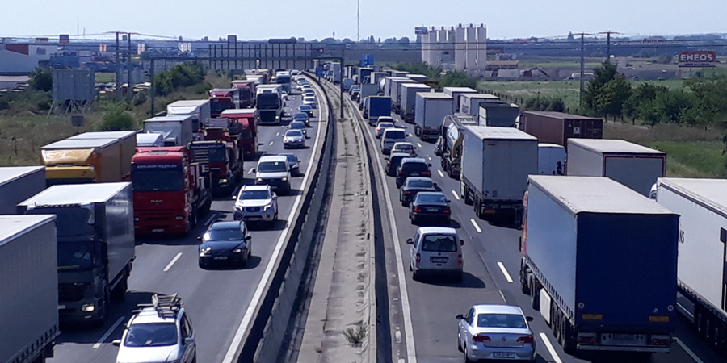

💨 Levegőminőség problémái
Debrecenben, mint sok más városban, a levegőminőség romlása különösen télen, a fűtési szezonban jelentkezik. A közlekedés, az ipari tevékenység és a lakossági fűtés mind hozzájárulnak a levegő szennyezéséhez.
- A magas szállópor-koncentráció szív- és érrendszeri problémákat okozhat, különösen a gyermekek és idősek számára.
- A levegőminőség javításához szükséges a közlekedési eszközök környezetbarátabbá tétele és a megújuló energiaforrások használatának elősegítése.
🌳 Zöldterületek csökkenése
A város gyors urbanizációja és a növekvő népesség következtében a zöldterületek csökkenése aggodalomra ad okot. A parkok és a zöldterületek nemcsak a természetes élőhelyek, hanem a lakosok pihenését és szabadidős tevékenységeit is biztosítják.
- A zöldfelületek csökkentése a városi hősziget hatásának erősödését is okozza, ami a nyári hónapokban különösen káros hatással van a lakók életminőségére.
- A fenntarthatóság érdekében fontos a zöldterületek megóvása és a város zöldítésére irányuló programok támogatása.
🚮 Hulladékgazdálkodás problémái
A hulladékgazdálkodás mindig komoly kihívást jelent. Debrecenben is fontos lenne a szelektív hulladékgyűjtés hatékonyságának növelése, hiszen a nem megfelelően kezelt hulladék szennyezheti a környezetet és a talajt.
- A műanyag hulladékok megfelelő kezelése és újrahasznosítása különösen fontos a város számára, hogy csökkentsük a környezetre gyakorolt negatív hatásokat.
- A közösségi szemléletformálás kulcsfontosságú, hogy minden lakos tisztában legyen a szelektív hulladékgyűjtés szabályaival és fontosságával.
💧 Vízgazdálkodás
A vízkészletek megóvása Debrecenben is kiemelten fontos, hiszen az egyre szárazabb nyarak és az egyre növekvő vízfogyasztás problémákat okozhatnak.
- A vízszennyezés és a vízvisszatartási problémák is megoldásra várnak, különösen a csapadékvíz hasznosítása és az esővízgyűjtés terén.
- A fenntartható vízgazdálkodás fejlesztése érdekében a lakosság tudatosságának növelése elengedhetetlen.

🛣️ Közlekedési problémák
A város közlekedése, különösen a gépjárművek használata, nagyban hozzájárul a környezetszennyezéshez és a városi levegőminőség romlásához.
- Fontos a közlekedési eszközök környezetbarátabbá tétele, például elektromos járművek, kerékpáros infrastruktúra fejlesztése, és a közösségi közlekedés népszerűsítése.
- A fenntartható közlekedés érdekében a város közlekedési rendszereinek integrálása és a közlekedési kultúra fejlesztése szükséges.
🌿 Bio-diverzitás megőrzése
A biológiai sokféleség megőrzése, az invazív fajok ellenőrzése és a helyi élőhelyek védelme a környezetvédelem fontos részei Debrecenben is. A városnak komoly lépéseket kell tennie a helyi élőhelyek védelme érdekében.
- Az invazív fajok terjedésének megakadályozása érdekében elengedhetetlen a környezetvédelmi felvilágosítás és az ilyen fajok kiirtására irányuló helyi akciók.
- A biológiai sokféleség megőrzése érdekében fontos a fenntartható mezőgazdaság és a természetvédelmi területek védelme.